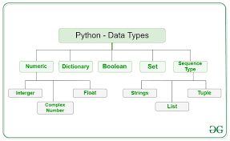
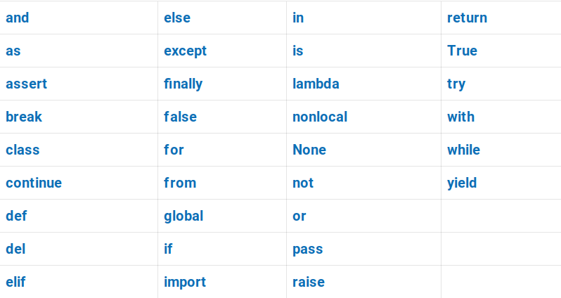

Значення - це конкретні данні, які присвоюються змінним. Наприклад ціле число 4, рядок "Hello world", число с плаваючою крапкою 3.14
Тип даних вказує на характеристику об'єкта (змінної) і визначає, яким чином дані можуть бути оброблені. В пайтоні існують вбудовані типи даних.
Int. Означає ціле число. Цей тип даних Python зберігає цілі числа. Ми можемо використовувати функцію type(), щоб дізнатися, до якого класу належить змінна
Float. Цей тип даних Python містить дійсні значення з плаваючою комою. Int може зберігати лише число 3, але float може зберігати 3,25, якщо ви хочете
String. Рядок — це послідовність символів. Python не має типу даних char, на відміну від C++ або Java. Рядок можна розділити одинарними або подвійними лапками.
list. Список - це набір значень. Пам'ятайте, що він може містити різні типи значень.
Змінна - це ім'я, яке посилається на значення. Змінна має унікальну ділянку пам'яті, яка використовується для зберігання певних даних (значення). Їм надаються унікальні імена, щоб розрізняти різні комірки пам'яті. Правила написання імені змінної:
1) Ім'я може начинатися з літер або знаків нижнього підкреслення "_"
2) Ім'я може складатися з букв, цифр або знаків нижнього "_"
3) В імені не можна використовуавти спеціальні символи, наприклад /, #, або @
4) Не можна називати змінні зарезервованими словами:
Оператор присвоювання (=) використовується для присвоєння значень змінній:
Інструкція - це команда комп'ютеру, одиниця виконання. Код в Python в даному випадку є набором інструкцій. Прикладом інструкцій є функцію, метод.
Оператори - це спеціальні символи, які виконують операції над значеннями та змінними та полегшують маніпулювання. Оператори можуть виконувати арифметичні, реляційні та логічні операції.
Арифметичні оператори:
Логічні оператори:
Порівняння (реляційні) оператори:
Присвоювання:
Інші оператори:
Операнди- це змінні або константи, з якими працюють оператори.
У Python оператори мають різний пріоритет, що визначає порядок їх виконання в одному виразі. Оператори з вищим пріоритетом виконуються першими. Ось загальний порядок пріоритету деяких основних операторів в Python, від найвищого до найнижчого:
У Python змінні використовуються для зберігання даних і забезпечують спосіб посилатися на ці дані за певним іменем. Над змінними можливо виконати різні операції щоб маніпулювати ними. Ось декілька прикладів:
Можливо використовувати оператори зі змінними (залежить від типу данних)
В Python можливо вводити та виводити дані за допомогою функцій.
У Python можливо перетворювати один тип даних в інший за допомогою функцій.
Зауважте, що такі значення буде перетворено на False: порожні послідовності та колекції: '', [], {} тощо. Числові нульові значення: 0, 0,0
Усе інше буде перетворено на True